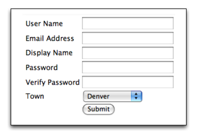
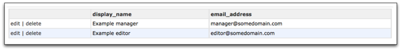

Sprox¶
Sprox is a widget generation library that has a slightly different take on the problem of creating custom web content directly from database schemas. Sprox provides an easy way to create forms for web content which are: automatically generated, easy to customize, and validated. Sprox also has powerful tools to help you display your content the way you want to with table and record viewers. Sprox provides a way to fill your widgets, whether they are forms or other content with customizable data.
Schema Based Widget Generation¶
Well, that’s a mouthfull! Sprox provides a bridge between database schema and the forms you want to customize for the web. Sprox has an IProvider, which basically tells sprox how to interpret data extracted from the database manipulation library. Sprox comes packaged with a provider for SQLAlchemy. It is important to understand that Sprox expects that the database manipulation library will have a unique way to map database objects to table schema. The mapped objects are often referred to as models, in Sprox, these are called entities, because Sprox has abstracted the manipulation of table and field schema to the point where they interface other parts of the system in a similar manner.
SQLAlchemy’s Object Relational Mapper provides a basis for many of the examples in this documentation. Here is the Model used in this documentation.
Form Generation¶
Sprox has a simple but powerful way to generate forms. Here is the simplest way to create a form based on a “User” class.:
from sprox.formbase import AddRecordForm
class UserForm(AddRecordForm):
__model__ = User
user_form = UserForm(DBSession)
That form can then be passed into a template, just like if it were a regular ToscaWidgets form. But you ask, “Why do you need to pass in the DBSession?” Well, in fact the session is not required to be passed in, but if you want Sprox to pick up the data for the drop-down menus, and multiple select fields, it needs a way to connect to the database in order to get the appropriate data. You might say, “Ok, but that form gives me a lot of junk I don’t want, and the password field is going to have to be verified if we wanted to say, make a registration form.” Well, remember Sprox is fully customizable. Here is an example registration form based on Sprox, complete with password validation.:
from sprox.formbase import AddRecordForm
from formencode import Schema
from formencode.validators import FieldsMatch
from tw.forms import PasswordField, TextField
form_validator = Schema(chained_validators=(FieldsMatch('password',
'verify_password',
messages={'invalidNoMatch':
'Passwords do not match'}),))
class RegistrationForm(AddRecordForm):
__model__ = User
__require_fields__ = ['password', 'user_name', 'email_address']
__omit_fields__ = ['_password', 'groups', 'created', 'user_id', 'town_id']
__field_order__ = ['user_name', 'email_address', 'display_name', 'password', 'verify_password']
__base_validator__ = form_validator
email_address = TextField
display_name = TextField
verify_password = PasswordField('verify_password')
registration_form = RegistrationForm(DBSession)
Which makes a form that looks something like this:
Notice first that we have made three fields required set the order, and omitted the fields that we do not want in the form. Also, we overrode the widget type for email_address and display_name (The default was a text area). Lastly we add a verify_password field that is not in the current schema. Also keep in mind that if you were to alter the schema for your database, any fields you added to your User model would also be added to this form. If you wanted to avoid this, you would use __limit_fields__ instead of __omit_fields__. There are many other __modifiers__ for FormBase in Sprox, you can use them to generate the forms you desire in any number of combinations. For more information see sprox.formbase and sprox.fillerbase.
Table Generation¶
Most people look for things that render forms, but fail to realize that generating tabular formed data provides almost the same challenge. After all, in an editable form, you must retrieve the data from the database in order to fill in the form entries. Well, Sprox makes this easy too. Here is some code to list out the users and their email addresses:
from sprox.tablebase import TableBase
from sprox.fillerbase import TableFiller
class UserTable(TableBase):
__model__ = User
__limit_fields__ = ['display_name', 'email_address']
user_table = UserTable(DBSession)
class UserTableFiller(TableFiller):
__model__ = User
__limit_fields__ = ['user_id', 'display_name', 'email_address']
user_table_value = UserTableFiller(DBSession).get_value()
And your template code would look like this:
${user_table_form(value=user_table_value)}
Rendered, the table would look like this:
Keep in mind that since the form generators are declarative, you can use mixins and other class trickery to reduce your code further (although it is not advised to use this to fool your fellow developer). Can you think of a way to reduce the 14 lines of python code above to 8?
Sprox, the big picture¶
In reality, Sprox is not about making your code smaller, but making it _smarter_. Since you have a declarative base to work from, you can subclass a set of widgets that fits your application. You can provide customized widget selectors which tell Sprox which widgets to use for which fields. Because Sprox gives you the power to customize any part of the form at any level of abstraction, you can create your own form generation based on the requirements for your project.
Indices and tables¶
API¶
Sprox has the ability to hook any widget library or object mapping library into it’s shoestrings, but as of this time Sqlalchemy and ToscaWidgets are the supported libraries.
Development¶
Sprox is developed using test driven development. Most development is done using unit testing, leveraging the valuable nose and coverage packages. This ensures that the Sprox library is in a known working state before releases, and that development can take some wild turns without affecting overall functionality. Sprox was born from dbsprockets which was primarily table based. The Sprox project was started since there was a large change in the API, even though the inner workings and overall design paradigms have not changed. Sprox borrows some conceptual ideas from Rum, a project started to make creating easier crud interactions through WSGI. Sprox is only released as a beta with 90% or higher coverage, 100% code coverage is the expectation for a release candidate. Here is the current code coverage.:
$ nose --with-coverage --cover-package=sprox --cover-erase ... Name Stmts Exec Cover Missing ------------------------------------------------------- sprox 0 0 100% sprox.configbase 77 77 100% sprox.dojo 0 0 100% sprox.dojo.fillerbase 9 9 100% sprox.dojo.sprockets 18 18 100% sprox.dojo.tablebase 12 12 100% sprox.entitiesbase 16 16 100% sprox.fillerbase 72 72 100% sprox.formbase 87 87 100% sprox.iprovider 33 33 100% sprox.metadata 51 51 100% sprox.providerselector 70 70 100% sprox.saormprovider 229 229 100% sprox.sprockets 55 55 100% sprox.tablebase 13 13 100% sprox.util 9 9 100% sprox.validators 11 11 100% sprox.validatorselector 52 52 100% sprox.viewbase 97 97 100% sprox.widgets 1 1 100% sprox.widgets.dojo 19 19 100% sprox.widgets.templates 0 0 100% sprox.widgets.widgets 78 78 100% sprox.widgetselector 40 40 100% ------------------------------------------------------- TOTAL 1049 1049 100% ---------------------------------------------------------------------- Ran 199 tests in 15.766s OK
Sprox is an open source project, and can be found at bitbucket. If you have a great idea of how to make sprox better, feel free to fork off your own copy and send a pull request.
Current Release¶
0.5.2
License¶
Sprox is licensed under the liberal MIT license. This means you can do what you want with it. Include it in your own package, sell it for a profit, modify it for your needs. We really don’t care how you use it, but it should be noted that preferential support is given to those consumers who give back to the open source community, participate in Sprox development and help us find and solve those pesky corner cases.
Core Modules¶
Dojo Support¶
Sprox now supports Dojo. Dojo is a Javascript library which allows developers to deliver considerably richer content through the web. Sprox’s initial dojo support provides table widgets for your application which can literally scroll through millions of records, all through the browser. Support is somewhat crude at this point, limited to just displaying the data and crud links, but you can expect to see editable/sorted/filtered data in the future.
About These Docs¶
This documentation is generated partly from doctests within sprox, which you will find througout the module-level api documentation. This means that the docs you see here are in a known working state before release, and should stay that way, even as development progresses. Even the trunk will have it’s tests executed before commit, so that should remain stable with respect to the docs. The examples you see through out these docs are all based on an example model which is also used throughout in testing.
Useful Links¶
Repository http://www.bitbucket.org/percious/sprox/src/
Mailing List http://groups.google.com/group/sprox
Discuss
blog comments powered by Disqus

Table Of Contents
- Sprox
- Indices and tables
- API
- Development
- Current Release
- License
- Core Modules
- Dojo Support
- About These Docs
- Useful Links